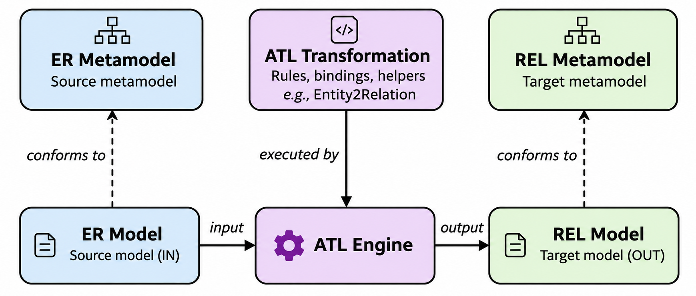
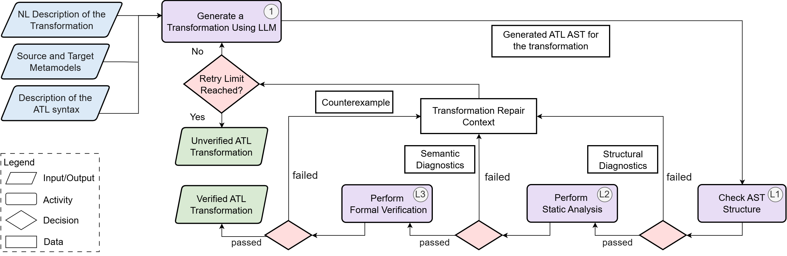
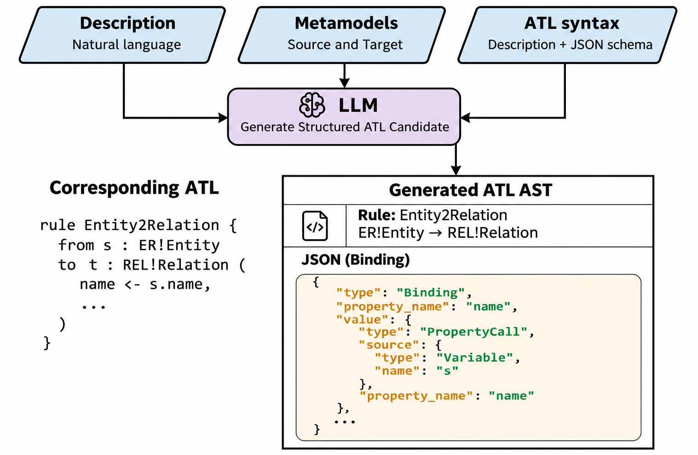
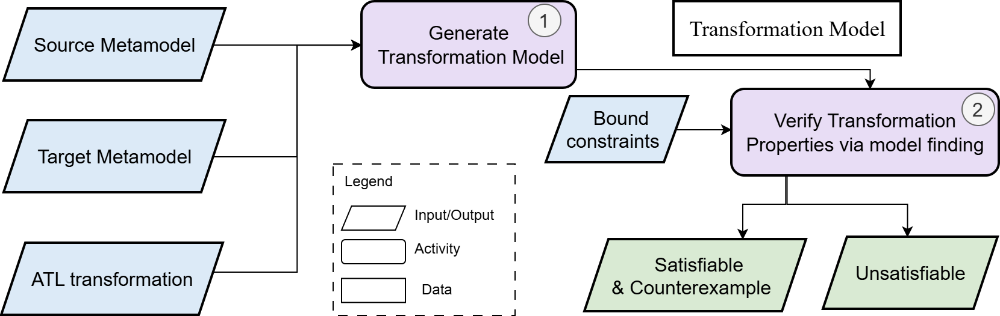

1Introduction & Motivation
ATL in Model-Driven Development. The Atlas Transformation Language (ATL) automates model-to-model transformations across domains and abstraction levels. Its rules match source elements and create target elements through property bindings.
Challenge. Writing ATL is challenging due to the complexity of metamodels, ATL/OCL syntax, and mapping semantics. LLMs can generate transformations from metamodels and natural-language requirements, but syntactically valid results may still violate metamodel constraints or intended requirements.

2Overview of the Proposed Method
The method takes as input a natural-language transformation description, the source and target metamodels, and an ATL syntax description with a JSON schema. The generation and verification process operates as follows:
- (1) Generation: The LLM uses these inputs to generate a structured ATL candidate.
- (L1–L3) Verification: Each generated candidate is progressively checked by the three verification layers and then revised based on the returned diagnostics or counterexamples until all checks pass or the retry limit is reached.
- Only those candidates that successfully pass all verification layers are accepted.

3Generation
The LLM uses natural-language requirements, source and target metamodels, and ATL syntax specifications to infer mappings and generate a structured ATL candidate. An ATL JSON schema guides generation and is reused for structural checking.

4Verification
Checks whether the JSON representation of each ATL candidate conforms to the JSON schema derived from the ATL abstract syntax.
Checks whether referenced types and features are defined in the source and target metamodels and whether expressions are type consistent.
Checks whether valid source models are transformed into target models satisfying target metamodel constraints; violations yield counterexamples.

Formal verification uses bounded model finding. A SAT result identifies a counterexample; an UNSAT result means none exists within the configured bounds.
5Experimental Evaluation
Setup
- Benchmark: 15 ATL tasks (LLM4MTLs), 45 test cases
- LLM Setup: Gemini 3.6 Flash (≤ 5 revisions)
- Bounds: 5 objects/class, 10 links/ref
Metrics
Parsed: accepted by ATL parser • PPLs: parser problems per code line
Tests Passed: transformations passing all functional tests
Avg. Tokens: tokens per task • Avg. Time: end-to-end time per task
Table 1: Ablation study of verification layers
| Configuration | Parsed | PPLs | Tests Passed | Avg. Time (s) |
|---|---|---|---|---|
| Without L1 | 15/15 | 0.0000 | 14/15 | 209.89 |
| Without L2 | 14/15 | 0.0004 | 11/15 | 128.86 |
| Without L3 | 15/15 | 0.0000 | 12/15 | 102.64 |
| With all layers | 15/15 | 0.0000 | 14/15 | 234.98 |
Table 2: Comparison with prompting strategies
| Method | Parsed | PPLs | Tests Passed | Avg. Tokens (k) | Avg. Time (s) |
|---|---|---|---|---|---|
| Baseline | 0.87 (13/15) | 0.0035 | 0.53 (8/15) | 7.75 | 46.29 |
| Few-shot (FS) | 0.87 (13/15) | 0.0007 | 0.53 (8/15) | 8.13 | 39.76 |
| Grammar (GR) | 0.93 (14/15) | 0.0002 | 0.60 (9/15) | 9.72 | 33.59 |
| FS + GR | 0.93 (14/15) | 0.0002 | 0.60 (9/15) | 9.92 | 34.48 |
| Proposed Method | 1.00 (15/15) | 0.0000 | 0.93 (14/15) | 64.74 | 234.98 |
6Conclusion & Future Work
The proposed approach integrates LLM-based generation with structural checking, static analysis, and formal verification, with detected violations guiding revision. It can improve the functional correctness of generated ATL transformations on the evaluated tasks.
Future work:
- Extend formal verification to a broader ATL/OCL subset and other transformation languages.
- Improve revision using diagnostics and counterexamples.
- Evaluate additional LLMs and larger benchmarks.